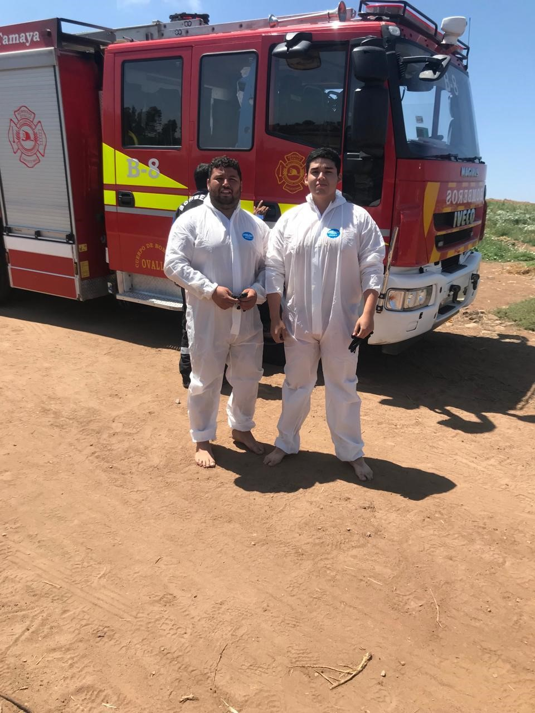
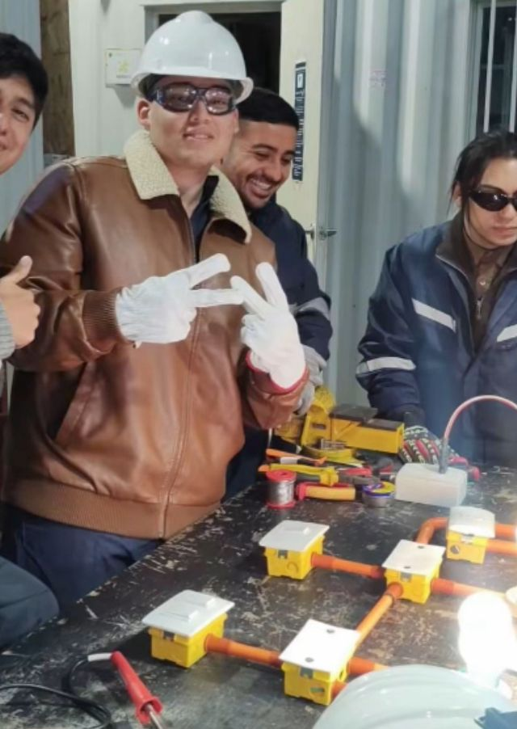
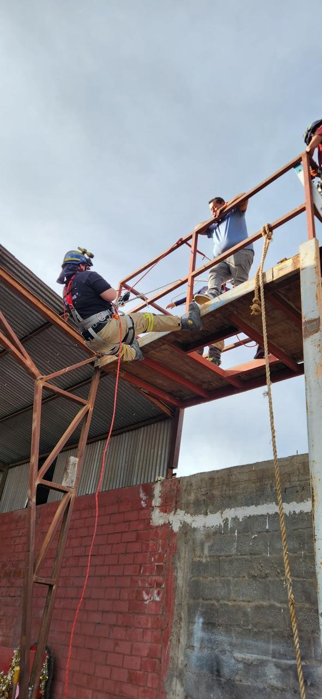
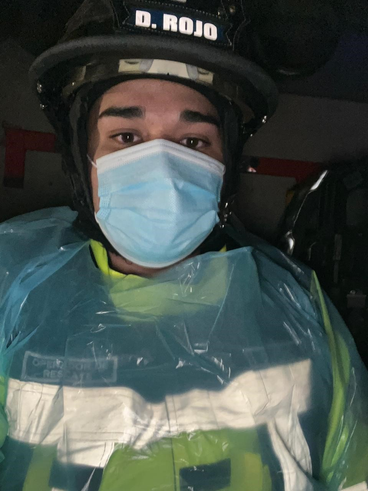
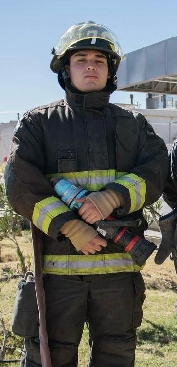

Hola, soy Diego Rojo
Soy estudiante de Analista Programador con experiencia en Java, Python y JavaScript. Me encanta diseñar algoritmos eficientes y construir aplicaciones web modernas.
Mis intereses incluyen el desarrollo backend con Spring Boot, APIs RESTful en Flask, y la mejora continua mediante pruebas unitarias y buenas prácticas de Git.
Cuando no estoy programando, disfruto de leer sobre nuevas tecnologías, colaborar en proyectos open source y compartir conocimientos en comunidades de desarrollo.
Cosas que no sabías de mí

Trabajé como paramédico

Soy técnico en electricidad
Fui guardia de seguridad

Conozco rescate en altura

Soy rescatista vehicular

Soy bombero voluntario